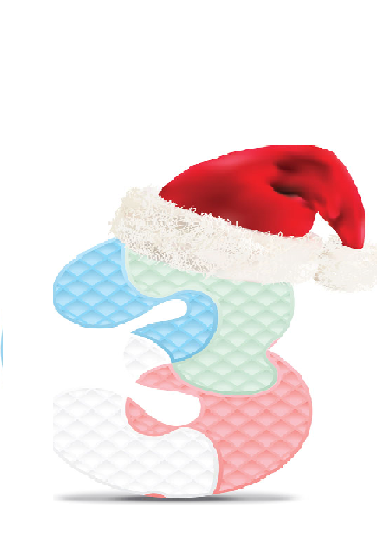

標題 聖誕老公公的由來 聖誕節是令人雀躍期待的日子，尤其是小孩子。相信大家對聖誕老公公 的事都耳熟能詳吧？從前有一個老人，名叫尼古拉斯，他一生最愛幫助 貧窮的人家。其中有一次他幫助三個貧窮的少送她們三袋金子以逃過被 賣的不幸。當尼古拉斯偷偷把其中一袋金子送給其中一名女子時，他把 金子從其中一個窗戶扔進去，恰好掉進景在壁上的一長襪中。於是，將 禮放在聖誕襪子的送禮方法家挨戶地去要糖果喲！據說平安夜的晚上， 聖誕節老公公會駕著馴鹿雪橇滿載著禮物準備送點這一年來表現很好的 小朋友，他會悄悄地從煙囪爬進屋內，禮物塞在掛在床頭的襪子裡。所 以孩子總會把一條條色彩繽紛的襪子掛在床頭，並在襪子旁邊放杯熱牛 奶給勞苦功高的聖誕老人解渴，並送份大禮給自己。隔天一每個小朋友 都迫不及待地打開禮，想知道自己得到什麼獎勵。到了1822年，一位荷 蘭傳教士把這位偉大慈善家的故事傳到美國之後，美國商人更以特殊的 行銷手法，每年利用這個節日大張旗鼓地宣傳廣告，大賺一筆，在亞洲 的日本及其他各國也群起效尤。因此裝扮聖誕老人來慶祝聖誕節的風俗 習慣也就漸漸地流行到世界各國了。